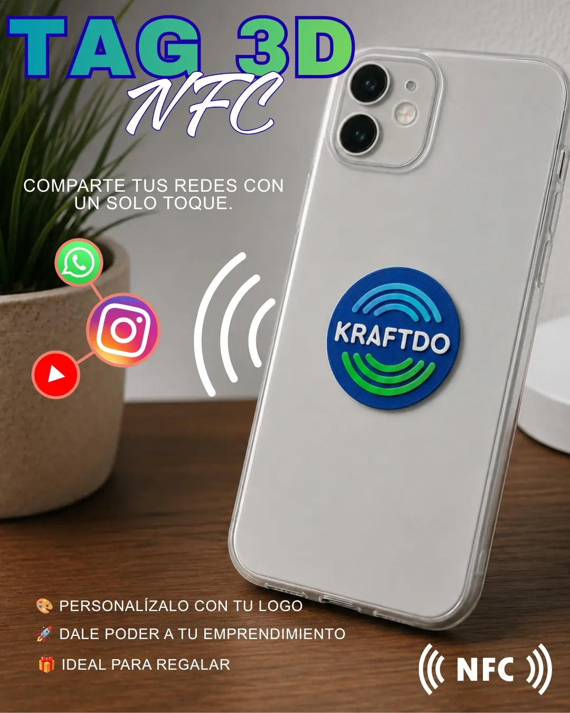
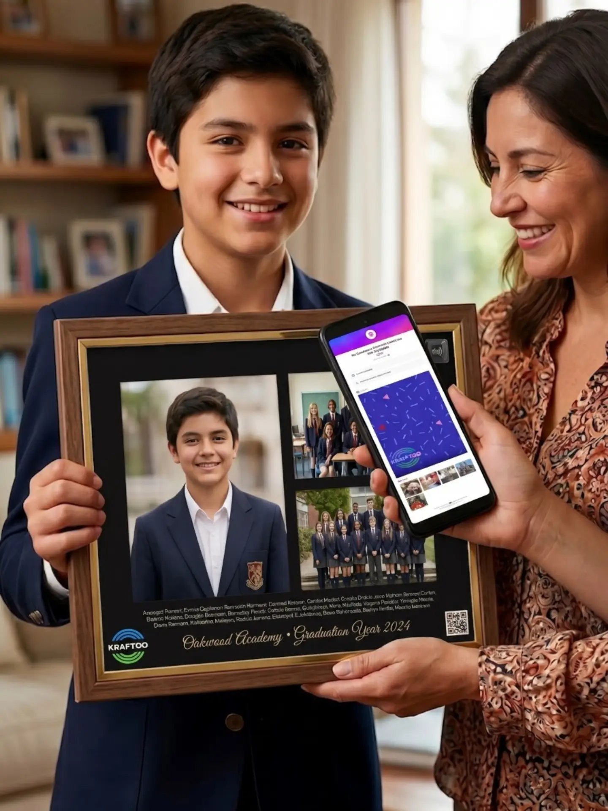
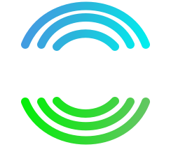

Sitio de marca y experiencia digital
Diseño responsive, identidad KraftDo, español e inglés, temas claro/oscuro/sistema y animaciones con Three.js y GSAP. Una presentación comercial conectada con el acceso a la plataforma.
CASO 001 / PRIMER CLIENTE DE HEFESTO
De una marca que conecta objetos con personas, a una plataforma que conecta toda su operación. Nuestro primer proyecto a medida.

01 / EL DESAFÍO
KraftDo combina diseño, personalización y productos NFC/QR. El desafío fue dar continuidad a esa propuesta: presentar la marca, crear experiencias digitales y organizar los procesos detrás de cada pedido.
Hefesto trabajó en el diseño y desarrollo de la web y la plataforma, los flujos de clientes, la gestión interna, las integraciones y la preparación técnica para mantener y evolucionar el producto.
02 / ALCANCE DEL DESARROLLO
Explora las funcionalidades desarrolladas para KraftDo.
Diseño responsive, identidad KraftDo, español e inglés, temas claro/oscuro/sistema y animaciones con Three.js y GSAP. Una presentación comercial conectada con el acceso a la plataforma.
Editor de perfiles con nombre, descripción, enlaces, contacto y galería. URLs amigables personalizables, compatibilidad con UUID y recuperación de tarjetas anteriores con su identidad visual.
Regalos digitales con fotografías y videos vinculados a un objeto físico. Gestión de contenido y posibilidad de pausar el enlace para retirar su acceso.
Carga de fotografías y diseños, ajustes de composición y descarga de una vista previa para visualizar productos personalizados antes de producirlos.
Formularios conectados con una bandeja propia para cada usuario. Recepción de contactos, aprobación y retirada de reseñas, con separación de información por propietario.
Catálogo de productos físicos y digitales, datos del destinatario, dirección, comuna y región. Desglose de despacho por tarifas registradas según destino, peso y volumen.
Integración de checkout, confirmación de pagos y soporte para mensualidad. Descuento de stock al confirmar el pago. La validación productiva y el plan comercial dependen de la configuración del proveedor.
Materiales, stock, compras, gastos, ventas, costos y márgenes. Exportaciones Excel/CSV para seguir trabajando con la información fuera de la plataforma.
Destinatarios y horarios configurables para stock, despachos pendientes y resúmenes. Integración de QStash y Resend para tareas programadas y correo, con registro de ejecuciones.
Acceso con correo y conectores Google/Facebook. Sesión compartida entre dominios, roles de administración, recuperación de contraseña y verificación adicional por correo o Authenticator.
Blog y desarrollo de conectores para Instagram y Canva. Sincronización de contenido de una cuenta profesional; conexión de diseños, subida de imágenes y exportaciones con Canva Connect. Activación sujeta a permisos y revisión del proveedor.
Respaldo y restauración de base de datos y archivos, documentación técnica y variante preparada para VPS con Docker y Caddy. Páginas públicas de privacidad y solicitud de eliminación de datos.

TECNOLOGÍA CON UN PROPÓSITO
Perfiles, recuerdos y contenido que acompañan al producto. Una misma identidad desde el primer contacto con la marca hasta la experiencia que se comparte.

03 / HEFESTO ENGINEERING
Interfaz, adaptación de identidad visual, experiencia responsive y construcción de funcionalidades a medida.
Conexión de formularios, permisos por propietario, corrección de sesiones y comprobaciones automatizadas de los flujos.
Documentación, exportaciones, respaldo y restauración; adaptación de infraestructura para una futura operación en VPS.
04 / INTEGRACIONES CON ALCANCE CLARO
La implementación y la activación comercial son etapas distintas.
Conector desarrollado y configuración sandbox documentada. La operación productiva y el plan mensual requieren credenciales y definición comercial.
Flujos implementados. La disponibilidad depende de cuentas autorizadas, permisos, configuración y revisión de cada proveedor.
Cálculo con tarifas registradas. La cotización automática con el transportista requiere acceso a su API.
Variante Docker/Caddy y procedimientos de migración preparados. No se presenta como una migración a VPS ya completada.
04.1 / HEFESTO · CONNECTED SYSTEMS
El alcance completo de integraciones y componentes conectados desarrollados para KraftDo.
Checkout, confirmación de transacciones, pedidos y cobro mensual.
Sandbox documentado; producción y precio mensual por validar.
OAuth PKCE por usuario, tokens cifrados, listado y creación de diseños, editor oficial, subida de imágenes y exportación PNG/JPG/PDF/MP4.
Conector desarrollado; requiere credenciales, permisos y revisión de Canva.
Sincronización de publicaciones, reels e historias de cuentas profesionales, conservación del último contenido y ocultación de historias vencidas.
Requiere cuenta profesional autorizada. No incluye publicación automática.
Inicio de sesión con cuenta Google y retorno seguro a la plataforma.
Implementado; activación sujeta a configuración del cliente OAuth.
Inicio de sesión con Facebook, dominios y retornos autorizados.
Implementado; requiere permisos y configuración de Meta.
Sesiones, roles, recuperación, verificación por correo, Authenticator y combinación de ambos factores; códigos de recuperación.
Desarrollado. El correo requiere configurar el remitente.
Recuperación de contraseña, invitaciones, códigos de verificación, avisos y resúmenes del negocio.
Implementado; requiere dominio remitente verificado y prueba de entrega.
Recordatorios, alertas de stock y despacho, resúmenes y sincronización periódica de Instagram.
Implementado; calendarios y credenciales deben estar configurados.
Fotos, videos y tarjetas HTML recuperadas; almacenamiento de objetos y conservación de enlaces al contenido original.
Adaptadores desarrollados; recursos y accesos dependen del entorno.
Ejecución en Workers, persistencia D1, esquema y migraciones con Drizzle.
Arquitectura implementada en la variante Sites.
Direcciones, destinatarios y cálculo con tarifas registradas por destino, peso y volumen.
Cotizador local desarrollado; API automática de Starken pendiente.
Perfiles, enlaces amigables, compatibilidad UUID, tarjetas recuperadas y registro de escaneos.
Funcionalidades desarrolladas.
Exportación de información de materiales, stock, compras, ventas, costos y márgenes.
Exportadores desarrollados.
Variante Next.js/Node, contenedores, proxy HTTPS, almacenamiento persistente, respaldo y restauración.
Preparado para VPS; no implica una migración ya ejecutada.

Tarjetas inteligentes, productos personalizados y recuerdos que conectan. Descubre KraftDo y entra a su plataforma.
TU NEGOCIO PUEDE SER EL SIGUIENTE